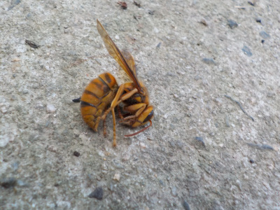
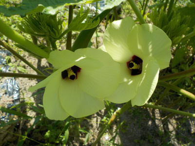
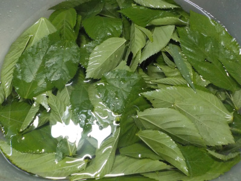
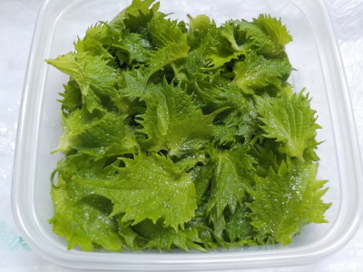
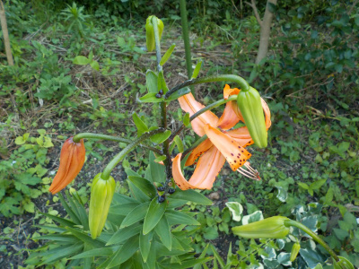
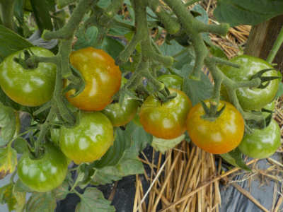
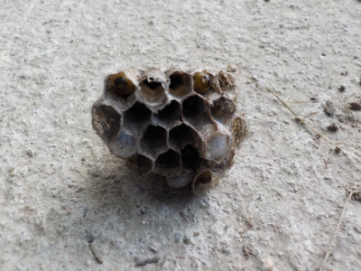
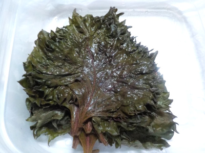

このケブカスズメバチとかキイロスズメバチとかいうのを叩いています。
2023/07/30

このスズメバチがよく飛んでて怖いので、近くに寄ってくるのはハエたたきで叩き落としています。
ネットで調べたら攻撃性が高いとありました。殺虫スプレーを使った方がいいかもしれません。
2023/07/30

このスズメバチがよく飛んでて怖いので、近くに寄ってくるのはハエたたきで叩き落としています。
ネットで調べたら攻撃性が高いとありました。殺虫スプレーを使った方がいいかもしれません。
2023/07/30

コンディションのいい花が並んでいました。葉っぱの上で咲いたら見栄えがいいのにな。
2023/07/17

夏のネバネバのモロヘイヤを収獲しました。
葉っぱちぎって、洗って、茹でて、細かく刻んでネバネバが出来ます。手間が掛かりますが、たぶん栄養があるんですよね。
簡単に食べれるオクラより栄養があって欲しいな。
2023/07/11

赤シソの塩漬けは色々使い易くで、順調に減っています。
今度は青シソで塩漬けを作りました。
2023/07/11

オニユリが咲きだしました。もう夏ですね。
あー。夏までにやっておきたいことがあったけど、面倒で出来なかったなー。
2023/07/09

この写真だとちょっとオレンジがかったのを3個採りました。
たぶん放置してたら皮が割れます。
今回の大雨で、久しぶりに水没した道路を見ました。
2023/07/02

鎌で草刈りをしていたら、この巣の持ち主に手を刺されました。アシナガバチです。
凄く痛いってことはないんですが、手がパンパンに膨らんで指曲げにくくなりました。
お腹らへんも真っ赤になりました。後、あちこちがかゆいです。
また刺されないように、分厚い手袋とハエたたきを買おうと思いました。
2023/07/01

赤紫蘇の赤が落ちちゃうと、なんか美味しそうに見えない。
味は美味しいので、コツコツ使って食べています。
過去の日記
熱中症に注意しましょう。